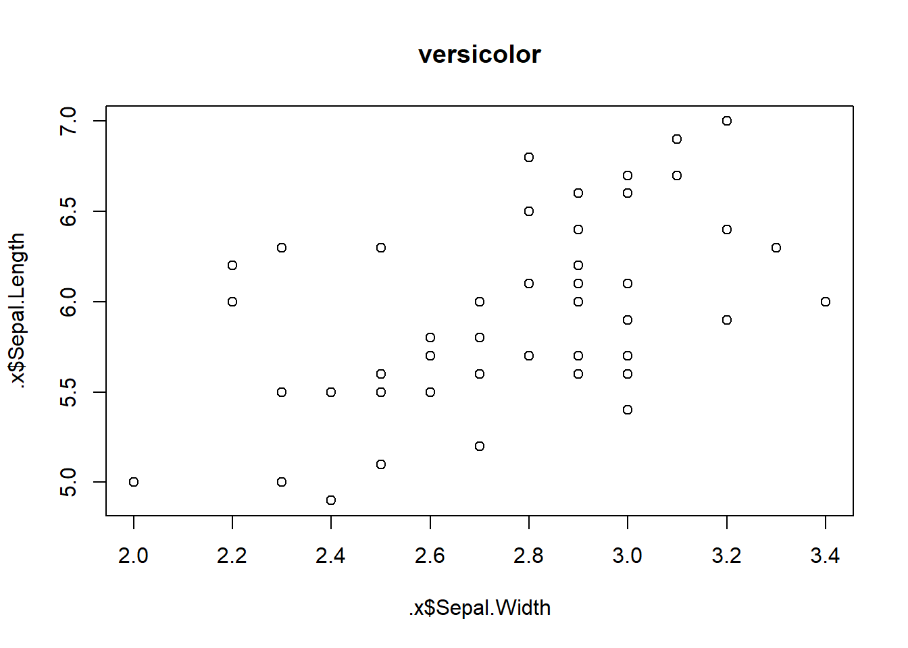
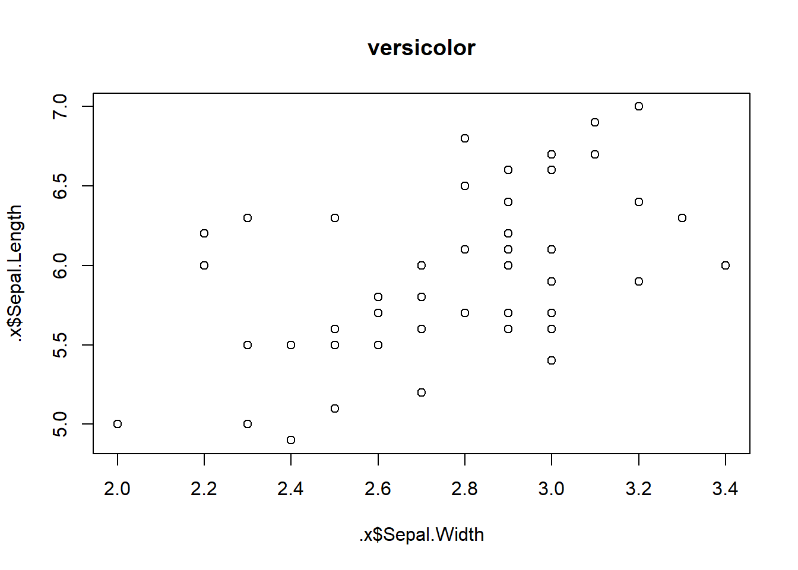

1.1 Advanced R
Advanced R 2nd ed. Hadley Wickham
Selected Chapters
Names and Values
Vectors
Subsetting
Control Flow
Functions
Functionals
1.1.1 Names and Values
1.1.1.1 Binding
In R, names are assigned a value (e.g. a vector doesn’t have a name, rather, a name(s) points to a vector). The actual address of an object is exposed by lobstr::obj_addr().
x <- 1:10
obj_addr(x)
## [1] "0x1517f8b0"
# notice x and y are pointers to the same object
y <- x
obj_addr(y)
## [1] "0x1517f8b0"
# this applies to function arguments in their environment as well
fn <- function(z){
z
}
# fn() returns the argument z at the same address
obj_addr(fn(x))
## [1] "0x1517f8b0"1.1.1.2 Syntactic Names
Names in R can be letters, numbers, . or _; but cannot start with a number or _ or contain ?Reserved words.
1.1.1.3 Copy-on-Modify
R objects are generally immutable. A new copy is made when you modify an object. There are two Modify-in-Place exceptions.
# create vector x
x <- 1:10
obj_addr(x)
## [1] "0x180fe9d8"
# modify first value in x
x[[1]] <- 0
# note x now points to a new object
obj_addr(x)
## [1] "0x1806d148"1.1.1.3.1 Trace Copying of Objects
base::tracemem() will mark an object and print a message whenever it is copied. This is
a major cause of hard-to-predict memory usage.
# tell R to trace copies of object reference `x`
tracemem(x = x)
# modify the first element in vector `x`
# R prints a tracemem message to show the object is copied to a new address
x[[1]] <- 2
#> tracemem[0x000002379ca5a190 -> 0x000002379cd8dbb0]:
# tell R to stop tracing this object
base::untracemem(x = x)1.1.1.3.2 List Objects
Just like variables, each element of a list also points to a value. Copy-on-modify and modify-in-place applies here as well. R creates a shallow copy of the list. Meaning the list object and its bindings are copied; however, the underlying values are not.
In a deep copy, like prior to R 3.1.0, the underlying values are also copied.
# create a list named `l`
l <- list(1:10, TRUE, c('Apple','Broccoli','Chowder'))
# show the address of the third list element
obj_addr(l[[3]])
## [1] "0x18641c28"
# modify the third list element
l[[3]] <- c('Appricot','Basmati Rice','Cheese')
# the third list element's address is changed
obj_addr(l[[3]])
## [1] "0x186db4c0"Use lobstr::ref() to see common values between lists:
# create a list object
listA <- list(1,2,3)
# create a new pointer to the same list object
listB <- listA
# modify the third list element of listB, creating a shallow copy of the list object
listB[[3]] <- 4
# ref() lists the address of each list element. Notice two values are still shared
# between `listA` and `listB`.
ref(listA, listB)
## o [1:0x18ad0ff0] <list>
## +-[2:0x189423a8] <dbl>
## +-[3:0x18942370] <dbl>
## \-[4:0x18942338] <dbl>
##
## o [5:0x18b87d90] <list>
## +-[2:0x189423a8]
## +-[3:0x18942370]
## \-[6:0x18942220] <dbl>1.1.1.3.3 Data Frames
A data frame is simply a list where each element is a vector of the same length.
# create a data frame with three columns
df <- data.frame(col1 = TRUE,
col2 = 1:10,
col3 = rep(x = c('On','Off'),
length.out = 10))
# show the address of the data frame and each element (i.e. column)
ref(df)
## o [1:0x195b9330] <df[,3]>
## +-col1 = [2:0x19580628] <lgl>
## +-col2 = [3:0x195aaaf0] <int>
## \-col3 = [4:0x19580778] <fct>When a column is modified only one element is copied:
# modify a column and note the addresses of the unchanged columns remain the same
# because they point to the same objects as before
df$col1 <- FALSE; ref(df)
## o [1:0x198fd0d8] <df[,3]>
## +-col1 = [2:0x198b3110] <lgl>
## +-col2 = [3:0x195aaaf0] <int>
## \-col3 = [4:0x19580778] <fct>This has important consequences for memory when you update rows of data where each element gets copied:
1.1.1.3.4 Character Vectors
R uses a global string pool to store unique character objects so they are not duplicated
unnecessarily. Use the character argument to show their address in the global string pool
with lobstr::ref():
# create a character vector
chr <- c('Quarter',
'Dime',
'Nickle',
'Penny',
'Penny')
# show addresses in the global string pool. Notice the shared value for 'Penny'
ref(chr,
character = TRUE)
## o [1:0x17e3a7f8] <chr>
## +-[2:0x15cd8930] <string: "Quarter">
## +-[3:0x15cd88c0] <string: "Dime">
## +-[4:0x15cd8818] <string: "Nickle">
## +-[5:0x15cd87a8] <string: "Penny">
## \-[5:0x15cd87a8]1.1.1.4 Object Size
lobstr::obj_size() shows the amount of memory an object takes, while obj_sizes()
breaks down multiple objects into their individual contribution to total memory.
Due to binding names, global string pools, and ALTREP (alternate representation where some vectors are stored in a compact manor; e.g. 1:1000 only stores the first and last numbers, not 1,000 numbers) the size of objects may surprise you.
# create a length one chracter vector and a length 100 character vector
x <- 'Charlie'
y <- rep(x = 'Charlie', times = 100)
# y is only ~8x the size of x, not 100x
obj_size(x); obj_size(y)
## 112 B
## 904 B
z <- 1:10
# create a list with one element `z`
list1 <- list(z)
# create a list with three elements, all `z`
list2 <- list(z, z, z)
# list2 only contributes an extra 80 Bytes to the total memory between the two
obj_sizes(list1, list2)
## * 736 B
## * 80 B1.1.1.5 Modify-in-Place
There are two places where R will optimize memory by modfiying an object “in place” (i.e. does not make a copy).
- objects with a single binding
> hats <- c('red','brown','blue')
> obj_addr(hats)
[1] "0x1d51fe614d8"
>
> hats[[1]] <- 'orange'
> obj_addr(hats)
[1] "0x1d51fe614d8"
# note this is output from the R Console. RStudio runs everything within an Environment
# which breaks modify-in-place behaviorThis is one reason why looping in R is inefficient, the user is unwittingly copying objects many times over:
# create a dataframe
df <- data.frame(col1 = c(1:3))
# trace copies of this dataframe
tracemem(df)
## [1] "<00000000187C6918>"
# use a for loop to increment the dataframe values
# R copies the object 12 times!!!
for (i in 1:3){
df[[1]][i] <- df[[1]][i] + 1
}
## tracemem[0x00000000187c6918 -> 0x0000000018a09a00]: eval eval withVisible withCallingHandlers handle timing_fn evaluate_call <Anonymous> evaluate in_dir block_exec call_block process_group.block process_group withCallingHandlers process_file <Anonymous> <Anonymous> do.call eval eval eval eval eval.parent local
## tracemem[0x0000000018a09a00 -> 0x0000000018a09840]: eval eval withVisible withCallingHandlers handle timing_fn evaluate_call <Anonymous> evaluate in_dir block_exec call_block process_group.block process_group withCallingHandlers process_file <Anonymous> <Anonymous> do.call eval eval eval eval eval.parent local
## tracemem[0x0000000018a09840 -> 0x0000000018a19d10]: [[<-.data.frame [[<- eval eval withVisible withCallingHandlers handle timing_fn evaluate_call <Anonymous> evaluate in_dir block_exec call_block process_group.block process_group withCallingHandlers process_file <Anonymous> <Anonymous> do.call eval eval eval eval eval.parent local
## tracemem[0x0000000018a19d10 -> 0x0000000018a19b88]: [[<-.data.frame [[<- eval eval withVisible withCallingHandlers handle timing_fn evaluate_call <Anonymous> evaluate in_dir block_exec call_block process_group.block process_group withCallingHandlers process_file <Anonymous> <Anonymous> do.call eval eval eval eval eval.parent local
## tracemem[0x0000000018a19b88 -> 0x0000000018a19a00]: eval eval withVisible withCallingHandlers handle timing_fn evaluate_call <Anonymous> evaluate in_dir block_exec call_block process_group.block process_group withCallingHandlers process_file <Anonymous> <Anonymous> do.call eval eval eval eval eval.parent local
## tracemem[0x0000000018a19a00 -> 0x0000000018a198b0]: eval eval withVisible withCallingHandlers handle timing_fn evaluate_call <Anonymous> evaluate in_dir block_exec call_block process_group.block process_group withCallingHandlers process_file <Anonymous> <Anonymous> do.call eval eval eval eval eval.parent local
## tracemem[0x0000000018a198b0 -> 0x0000000018a197d0]: [[<-.data.frame [[<- eval eval withVisible withCallingHandlers handle timing_fn evaluate_call <Anonymous> evaluate in_dir block_exec call_block process_group.block process_group withCallingHandlers process_file <Anonymous> <Anonymous> do.call eval eval eval eval eval.parent local
## tracemem[0x0000000018a197d0 -> 0x0000000018a19648]: [[<-.data.frame [[<- eval eval withVisible withCallingHandlers handle timing_fn evaluate_call <Anonymous> evaluate in_dir block_exec call_block process_group.block process_group withCallingHandlers process_file <Anonymous> <Anonymous> do.call eval eval eval eval eval.parent local
## tracemem[0x0000000018a19648 -> 0x0000000018a194c0]: eval eval withVisible withCallingHandlers handle timing_fn evaluate_call <Anonymous> evaluate in_dir block_exec call_block process_group.block process_group withCallingHandlers process_file <Anonymous> <Anonymous> do.call eval eval eval eval eval.parent local
## tracemem[0x0000000018a194c0 -> 0x0000000018a19370]: eval eval withVisible withCallingHandlers handle timing_fn evaluate_call <Anonymous> evaluate in_dir block_exec call_block process_group.block process_group withCallingHandlers process_file <Anonymous> <Anonymous> do.call eval eval eval eval eval.parent local
## tracemem[0x0000000018a19370 -> 0x0000000018a19290]: [[<-.data.frame [[<- eval eval withVisible withCallingHandlers handle timing_fn evaluate_call <Anonymous> evaluate in_dir block_exec call_block process_group.block process_group withCallingHandlers process_file <Anonymous> <Anonymous> do.call eval eval eval eval eval.parent local
## tracemem[0x0000000018a19290 -> 0x0000000018a19108]: [[<-.data.frame [[<- eval eval withVisible withCallingHandlers handle timing_fn evaluate_call <Anonymous> evaluate in_dir block_exec call_block process_group.block process_group withCallingHandlers process_file <Anonymous> <Anonymous> do.call eval eval eval eval eval.parent local
# turn of object memory trace
untracemem(df)- Environments
Environments are always modified in place and all objects within the environment keep the same reference.
1.1.1.6 Unbinding and Garbage Collector (GC)
The (GC) garbage collector deletes objects that are no longer used and requests more memory from the operating system as needed to create objects.
For example:
# create three objects all bound to `x`
x <- 1:10
x <- c('one','two','three')
x <- TRUE
# removing `x` causes GC to delete the three objects b/c they have no other bindings
remove(x)You can call GC yourself with base::gc(), but the user should not ever have the need.
1.1.2 Vectors
R has two types of vectors: atomic vectors and list vectors.
Atomic vectors have values all of the same type, while lists can have values of different types.
NULL is not a vector, but is often used in R to represent a zero length vector. For practical purposes you can consider it a vector.
Vectors can have attributes; the most important are dimension and class.
- dimension: turns a vector into matrices and arrays
- class: critical for S3 objects like factors, dates & date-time, data frames, and tibbles
1.1.2.1 Atomic Vectors
1.1.2.1.1 Types
There are four primary types of atomic vectors, and their scalars (i.e. individual value) can be instantiated as:
- Logical:
TRUE/T;FALSE/F - Double: decimal
2.345, scientific2e10, hexadecimal3425h, infiniteInf/-Inf, Not a NumberNaN - Integer: a non-fractional double followed by
L(e.g.7L,2e7L,3425hL) - Character: strings surrounded by single/double quotes;
'Cats'or"Dogs"
Doubles and Integers belong to meta-type numeric. is.numeric() tests if a vector can be interpreted
as a number: is.numeric(2.2) = TRUE = is.numeric(2L) = TRUE
1.1.2.1.2 Combine scalars
Scalars can be combined to make longer vectors using c():
R will flatten atomic vectors when combined with other atomic vectors:
typeof() and length() will return the type and length of an atomic vector:
1.1.2.1.3 Missing values
Missing values are represented by NA (Not Applicable). There are logical (NA),
integer (NA_integer_), double (NA_real_), and character (NA_character_) types
but R will parse the appropriate NA needed.
Many logistical tests in R containing NA will return NA:
For this reason, finding missing values in a vector is not obvious:
Instead, use is.na() to test for missing values:
The exception is when all possible values would not change the result:
1.1.2.1.4 Testing and coercing vectors
There are many is.*() pattern functions in R to test vector type. is.logical(),
is.integer(), is.double(), and is.character() all test for the four primary
atomic vector types:
However, some is.*() pattern functions behave unexpectedly. is.numeric(),
for example, returns false for factors, Date, POSIXt and difftime because they
have their own methods for detection; even though they are numbers and arithmetic
generally makes sense. So be sure to read the documentation carefully (?is.numeric()).
coercing types
It is possible to coerce vectors to a new type, or two combine two types of vectors into one. The types will be coerced in this order: character > double > integer > logical
Use as.*() functions to specifically coerce types. R can also implicitly coerce types
when needed. R will give a warning message if it fails or NAs are introduced.
1.1.2.2 Attributes
Other data-structures in R are built on top of these atomic vectors using attributes. For example, the dimension attribute transforms vectors into matrices and arrays.
1.1.2.2.1 Getting and setting attributes
Attributes are like meta-data you assign in name-value pairs:
attr()to retrieve and set single attributesattributes()to retrieve multiple attributesstructure()to set multiple attributes
fruit <- 1:10
# create fruit attributes type and days old
attr(x = fruit, which = 'type') <- c('orange','apple','pear')
attr(fruit,'type')
## [1] "orange" "apple" "pear"
attr(x = fruit, which = 'days old') <- 2
str(attributes(x = fruit))
## List of 2
## $ type : chr [1:3] "orange" "apple" "pear"
## $ days old: num 2
# simultaneously create object and attributes
fruit <- structure(
1:10,
type = c('orange','apple','pear'),
'days old' = 2
)
str(attributes(fruit))
## List of 2
## $ type : chr [1:3] "orange" "apple" "pear"
## $ days old: num 21.1.2.2.2 Names
names is a special and important attribute in R. Although it is not enforced,
names should be unique and complete. They can be set several ways:
# on creation
x <- c(a=1,b=2,c=3)
attr(x, which='names')
## [1] "a" "b" "c"
# assigning a vector of names
x <- 1:3
names(x) <- letters[1:3]
attr(x, which='names')
## [1] "a" "b" "c"
# inline with setNames()
x <- setNames(1:3, letters[1:3])
attr(x, which='names')
## [1] "a" "b" "c"
# with attr()
attr(x, which = 'names') <- letters[1:3]
attr(x, which='names')
## [1] "a" "b" "c"1.1.2.2.3 Dimensions
The dim attribute transforms NULL dimensional vectors into 2d matrices and multi-dimensional arrays, and can be set by dim(), matrix(), and array():
x <- 1:6
dim(x) <- c(2,3)
x
## [,1] [,2] [,3]
## [1,] 1 3 5
## [2,] 2 4 6
matrix(data = 1:6, nrow = 1, ncol = 6)
## [,1] [,2] [,3] [,4] [,5] [,6]
## [1,] 1 2 3 4 5 6
array(data = 1:6, dim = c(2,3))
## [,1] [,2] [,3]
## [1,] 1 3 5
## [2,] 2 4 6
# non-idiomatic
attr(x, 'dim') <- c(3,2)
x
## [,1] [,2]
## [1,] 1 4
## [2,] 2 5
## [3,] 3 6Vector functions usually have matrix or array counterparts:
# vector, matrix, and array bindings
v <- structure(.Data = 1:9,
names = letters[1:9])
m <- matrix(data = 1:9,
nrow = 3,
ncol = 3,
dimnames = list(letters[1:3],
letters[1:3]))
a <- array(data = 1:9,
dim = c(3,3),
dimnames = list(letters[1:3],
letters[1:3]))
# Names
names(v)
## [1] "a" "b" "c" "d" "e" "f" "g" "h" "i"
rownames(m); colnames(m)
## [1] "a" "b" "c"
## [1] "a" "b" "c"
dimnames(a)
## [[1]]
## [1] "a" "b" "c"
##
## [[2]]
## [1] "a" "b" "c"
# Lengths
length(v)
## [1] 9
nrow(m);ncol(m)
## [1] 3
## [1] 3
dim(a)
## [1] 3 3
# Combine
c(v, c(j=10))
## a b c d e f g h i j
## 1 2 3 4 5 6 7 8 9 10
rbind(m, 10:12);cbind(m, 10:12)
## a b c
## a 1 4 7
## b 2 5 8
## c 3 6 9
## 10 11 12
## a b c
## a 1 4 7 10
## b 2 5 8 11
## c 3 6 9 12
abind::abind(a, 10:12, along=1); abind::abind(a, 10:12, along=2)
## a b c
## a 1 4 7
## b 2 5 8
## c 3 6 9
## 10 11 12
## a b c
## a 1 4 7 10
## b 2 5 8 11
## c 3 6 9 12
# Transpose
t(m)
## a b c
## a 1 2 3
## b 4 5 6
## c 7 8 9
aperm(a)
## a b c
## a 1 2 3
## b 4 5 6
## c 7 8 9
# Type test
is.vector(v, mode='any')
## [1] TRUE
is.matrix(m)
## [1] TRUE
is.array(a)
## [1] TRUEVectors may have different dimensions. They may print similar but will behave differently. Pay attention to [] syntax:
1.1.2.3 S3 Atomic Vectors
The attribute class is what makes an object part of the S3 object system in R, and
changes how generic functions behave compared to regular vectors. S3 objects are built
on top of atomic vectors.
1.1.2.3.1 Factors
Factors are a ubiquitous S3 object in base R. They handle categorical variables where the vector must contain only known values.
Factors are built on atomic vectors of type integer, and only have two attributes: class “factor” and levels, which defines the set, and sometimes order, of possible values.
Use factor() create a factor:
- x: a vector coercible to
character - levels: a unique vector of expected values in x; which can contain values not found in x or, conversely, exclude values found in x
- labels: a vector of name aliases for levels (in the same order as levels) or scalar
# create a factor from a vector of state abbreviations
# tell R to expect values MO, NY, AK, HI and their aliases are Missouri, New York, Alaska,
# & Hawaii
states <- factor(x = c('MO','NY','AK','MO','AK','IL'),
levels = c('MO','NY','AK','HI'),
labels = c('Missouri','New York','Alaska','Hawaii'))
# factor() converts the vector to integer values under-the-hood. These are rarely visible
# but can be exposed using c() (or unclass() but then you no longer have a factor). The
# integer refers to the sequence of levels given, starting with 'MO' in this case.
str(c(states))
## int [1:6] 1 2 3 1 3 NA
# usually factors print their levels attribute
states
## [1] Missouri New York Alaska Missouri Alaska <NA>
## Levels: Missouri New York Alaska Hawaii
# notice it did not print the levels given in factor(), but rather the label aliases
# were given to attribute `levels`. If no labels argument is given it defaults to same
# as levels.
attributes(states)
## $levels
## [1] "Missouri" "New York" "Alaska" "Hawaii"
##
## $class
## [1] "factor"
# if no levels argument was given, factor() would have defaulted to the unique set of values
# in x in ascending order. Note this would include Illinois (which we originally excluded and
# values in states became `NA`), and would have excluded Hawaii (which we may have wanted
# even though it is not in the current vector x).
sort(unique(as.character(c('MO','NY','AK','MO','AK','IL'))))
## [1] "AK" "IL" "MO" "NY"
# notice tabulated results appear in level order and include counts even for values not
# present in states
table(states)
## states
## Missouri New York Alaska Hawaii
## 2 1 2 0
# many base R functions convert character vectors to factor by default. This may not be
# desirable as the vector may not contain the complete set of values, or infer their
# correct order.
class(data.frame(x=c('red','yellow','blue'))[[1]])
## [1] "factor"
# use arguement stringsAsFactor to inhibit default factor creation
class(data.frame(x=c('red','yellow','blue'),
stringsAsFactors = FALSE)[[1]])
## [1] "character"Some categorical variables have order. Methods and modeling functions usually
treat ordered and unordered factors very differently. Use ordered() to create an
object of class “ordered factor”, where the order in levels implies the order
between factor levels.
priority <- ordered(x = c('low','medium','high'),
levels = c('low','medium','high'))
str(priority)
## Ord.factor w/ 3 levels "low"<"medium"<..: 1 2 3Finally, some functions coerce factors into strings (e.g. grepl()) while others
(e.g. c()) return the integer substrate. If you want string-like behavior, best to
coerce as.character() before performing string operations.
1.1.2.3.2 Dates
Date vectors are S3 objects built on type double, and have only attribute: class “Date”. They
represent days from the UNIX Epoch, 01-Jan-1970; and take
into account leap-days, but not leap-seconds.
1.1.2.3.3 Date-times
S3 Date-times come in two flavors: POSIX1ct (calendar time) & POSIXlt (local time). POSIXct is build on type double whereas POSIXlt is type list,
which we’ll discuss later.
POSIXct represents the number of seconds since the UNIX Epoch, 01-JAN-1970, and
has the attributes class & tzone. Pass the tz argument a tz database time zone
to change attribute tzone from the default local time. This does not change the underlying
double, only how it prints.
ct <- as.POSIXct(x = "2020-04-28 05:00:00", tz='UTC')
# the calendar time object
ct
## [1] "2020-04-28 05:00:00 UTC"
# built on doubles
typeof(ct)
## [1] "double"
# has attributes class and tzone
attributes(ct)
## $class
## [1] "POSIXct" "POSIXt"
##
## $tzone
## [1] "UTC"
# change tzone attribute to EDT, CDT, JST; notice midnight does not print a time
attr(ct, which = 'tzone') <- 'America/New_York'; ct;
## [1] "2020-04-28 01:00:00 EDT"
attr(ct, which = 'tzone') <- 'America/Chicago'; ct
## [1] "2020-04-28 CDT"
attr(ct, which = 'tzone') <- 'Asia/Tokyo'; ct
## [1] "2020-04-28 14:00:00 JST"
# the underlying double type atomic vector
unclass(ct)[1]
## [1] 15880500001.1.2.3.4 Difftimes
Difftimes are doubles which represent a duration of time (interpreted by attribute units) between
two dates/datetimes. units includes “secs”, “mins”, “hours”, “days”, and “weeks” and are not
sensitive to daylight savings time.
Limited math methods and arithmetic is available for difftime. See ?difftime.
# create difftime directly
day <- as.difftime(1, units = 'days')
day
## Time difference of 1 days
# create difftime by arithmetic
day_alt <- as.Date("2020-04-28") - as.Date("2020-04-27")
day_alt
## Time difference of 1 days
typeof(day)
## [1] "double"
class(day)
## [1] "difftime"
attributes(day)
## $class
## [1] "difftime"
##
## $units
## [1] "days"
# retrive/set units directly using units()
units(day) <- 'hours'
# day is now a 24 hour timediff
day
## Time difference of 24 hours
# add difftime to Date to return Date
as.Date("2020-04-28") + (2*day)
## [1] "2020-04-30"
# add difftime to difftime to return difftime
as.difftime(.5, units='mins') + as.POSIXct('2020-03-02 00:00:00')
## [1] "2020-03-02 00:00:30 CST"
# transform difftime by numeric to return difftime
day/2
## Time difference of 12 hours
# transform difftime by difftime to return difftime
day+day
## Time difference of 48 hours
# math methods are to describe difftime vectors
mean(c(as.Date("2020-04-28") - as.Date("2020-04-27"),
as.Date("2020-04-28") - as.Date("2020-04-26")))
## Time difference of 1.5 days
# round difftime etc.
round(day, -1)
## Time difference of 20 hours
# the underlying double
unclass(day)[1]
## [1] 241.1.2.4 Lists
Earlier we learned lists are just vectors of references to objects of any
type. They have only attribute class “list”.
Lists are created with list(). Notice they can contain references to other list, and so
are called recursive vectors:
l <- list(1,
letters[1:10],
c(T,T,F,F),
list(1))
str(l)
## List of 4
## $ : num 1
## $ : chr [1:10] "a" "b" "c" "d" ...
## $ : logi [1:4] TRUE TRUE FALSE FALSE
## $ :List of 1
## ..$ : num 1c() will convert vectors into lists before combining them:
c(list(letters[1:3]), 1:3) %>% str()
## List of 4
## $ : chr [1:3] "a" "b" "c"
## $ : int 1
## $ : int 2
## $ : int 31.1.2.4.1 Testing and coercing lists
# test for list type
is.list(l)
## [1] TRUE
typeof(l)
## [1] "list"
# already seen list(), but as.list() exists as well
as.list(1:4)
## [[1]]
## [1] 1
##
## [[2]]
## [1] 2
##
## [[3]]
## [1] 3
##
## [[4]]
## [1] 4
# to coerce list to vector
unlist(l)
## [1] "1" "a" "b" "c" "d" "e" "f" "g"
## [9] "h" "i" "j" "TRUE" "TRUE" "FALSE" "FALSE" "1"1.1.2.5 Data frames and tibbles
Data frames are the most important data structure for data analysis in R. They are
built on top of lists with attributes class “data.frame”, “names” (for columns),
and “row.names”; and, crucially, requires each element be a vector of equal length.
Tibbles are data frames that were later developed as part of the Tidyverse. They try and optimize the default
behavior of class data.frame in the following ways.
1.1.2.5.1 Creating data.frame or tbl_df
data.frame() creates a data frame object from … name = vector pairs:
# create character vector and add names attribute 'Color'
color <- rep(x = c('red','blue','yellow'), times = 2)
names(color) <- 'Color'
df <- data.frame(sock_id = 1:6, # use name = vector pairs
color, # or vectors with attribute "names"
6:1, # or let R use defaults
`1` = 1 # but non-syntactic names will be renamed without warning
)
typeof(df)
## [1] "list"
str(df)
## 'data.frame': 6 obs. of 4 variables:
## $ sock_id: int 1 2 3 4 5 6
## $ color : Factor w/ 3 levels "blue","red","yellow": 2 1 3 2 1 3
## $ X6.1 : int 6 5 4 3 2 1
## $ X1 : num 1 1 1 1 1 1Notice data.frame automatically creates factors from character vectors. Inhibit
with stringsAsFactors arguement:
data.frame(letters[1:3],
stringsAsFactors = FALSE) %>% str()
## 'data.frame': 3 obs. of 1 variable:
## $ letters.1.3.: chr "a" "b" "c"Like lists and matrices, data frames and tibbles have row and column names and dimensional length:
# column names
names(df); colnames(df)
## [1] "sock_id" "color" "X6.1" "X1"
## [1] "sock_id" "color" "X6.1" "X1"
# column length
length(df); ncol(df)
## [1] 4
## [1] 4
# row names
rownames(df)
## [1] "1" "2" "3" "4" "5" "6"
# row length
nrow(df)
## [1] 6
# row and column dimensions
dim(df)
## [1] 6 4Tibbles have class “tbl_df” (as well as data.frame) which modifies their behavior. They
are created similarly to data frames:
library(tibble)
tbl <- tibble(sock_id = 1:6, # use name = vector pairs
color, # or vectors with attribute "names"
6:1, # or let R use defaults
`1` = 1, # allows non-syntactic names
`1*2` = `1` * 2 # allows reference to new variables
)
typeof(tbl)
## [1] "list"
str(tbl)
## Classes 'tbl_df', 'tbl' and 'data.frame': 6 obs. of 5 variables:
## $ sock_id: int 1 2 3 4 5 6
## $ color : chr "red" "blue" "yellow" "red" ...
## $ 6:1 : int 6 5 4 3 2 1
## $ 1 : num 1 1 1 1 1 1
## $ 1*2 : num 2 2 2 2 2 2Tibbles can use the same methods as data tables, for example names and dimensional length:
colnames(tbl); ncol(tbl)
## [1] "sock_id" "color" "6:1" "1" "1*2"
## [1] 5
rownames(tbl); nrow(tbl)
## [1] "1" "2" "3" "4" "5" "6"
## [1] 6Notice tibble() did not coerce factors by default, allowed non-syntactic names
(enclosed in ````), and let you reference new columns as they are created.
Both data frames and tibbles require equal length vector columns and will recycle values if the vector length is smaller than the max column length; however, data frames will recyle any vector that is an integer multiple of the longest column, while tibbles will only recyle scalar values.
data.frame(1:4, # the longest column vector of length 4
1, # a scalar recyled 4 times
1:2 # a length 2 vector recyled 2 times
)
## X1.4 X1 X1.2
## 1 1 1 1
## 2 2 1 2
## 3 3 1 1
## 4 4 1 2
tibble(1:4, # the longest column vector of length 4
1, # a scalar recyled 4 times
1:2 # a length 2 vector recyled 2 times
)
## Error: Tibble columns must have consistent lengths, only values of length one are recycled:
## * Length 2: Column `1:2`
## * Length 4: Column `1:4`1.1.2.5.2 Row Names
Row names, a unique vector of character, can be assigned to Data frames. This idea
probably arose due to data frame’s close association to numerical matrices, where
storing character data along with the matrix is useful. Get and set row names with rownames(), or argument row.names on creation:
df <- data.frame(idx = 1:3,
row.names = c('Spider Man','Batman','Red Robin'))
df
## idx
## Spider Man 1
## Batman 2
## Red Robin 3Row names can be used to subset data frames:
Tibbles do not store row names for reasons you can read here. Rather, they treat
rownames as another feature of the data. The rownames argument in as_tibble()
or rownames_to_column() can transform row names to a column vector.
1.1.2.5.3 Subsetting
Data frames can be subset either one dimensionaly, like a list, or two dimensionally, like a matrix.
Data frame subsetting syntax can behave unexpectedly:
data.frame()[,vars]will return a data frame unless vars selects only one column; it returns a vector.selecting a single column with
data.frame$varwill return a column starting with\$varif$vardoesn’t exist.
Tibbles always return tibbles, and vectors can be returned when desired with tibble[[var]]. If
a column is not found it returns an error.
1.1.2.5.4 Testing and coercion
| Type | Testing | Coercion |
|---|---|---|
| data frame | is.data.frame() |
as.data.frame() |
| tibble | is_tibble() |
as_tibble() |
Note that is.data.frame() will return true for tibbles as well, since tibbles
are class data.frame.
1.1.2.5.5 List Columns
Because data frames are built on lists, they themsevles can contain lists. So it is possible in R to have a data frame containing data frames, making it easy to organize related datasets:
df <- data.frame(x = 1)
df$nested <- list(data.frame(cool = 1:3))
class(df$nested[[1]])
## [1] "data.frame"
df$nested[[1]]
## cool
## 1 1
## 2 2
## 3 3To include lists on creation use I(), which inhibits interpetation/conversion of objects
by setting the class to “as is”:
Or use tibbles which can handle lists on creation without I():
1.1.2.6 NULL
NULL is a special type in R. It has no attributes and is always zero length. It
is primarily used for two things:
- represent an empty vector
- represent a missing vector (e.g. often default function arguments are
NULL). This is different thanNULLin SQL, which is more likeNA, because SQLNULLand RNArepresent missing elements of a vector, rather than the vector itself.
Test for NULL with is.null():
1.1.3 Subsetting
1.1.3.1 Selecting multiple elements
To select any number of elements from a vector use [ (see ?`[` for help).
1.1.3.1.1 Atomic Vectors
Atomic vectors can be subset in six ways:
- Positive integers return elements at that position
x <- 11:20
x[1]
## [1] 11
x[1:3]
## [1] 11 12 13
# repeating element positions returns multiple elements
x[c(1,1,10,10)]
## [1] 11 11 20 20
# real numbers are converted to integer
x[c(1.1,2.2,3.3)]
## [1] 11 12 13
# order() returns integers for elements of vector x arranged in ascending or decending order
order(x, decreasing = TRUE)
## [1] 10 9 8 7 6 5 4 3 2 1
# pass that integer vector into `[` to select the reordered elements of x
x[order(x, decreasing = TRUE)]
## [1] 20 19 18 17 16 15 14 13 12 11- Negative integers exclude elements at that position
x[-c(1,3,5,7,9)]
## [1] 12 14 16 18 20
# you can't mix positive and negative integers
x[c(1,-2)]
## Error in x[c(1, -2)]: only 0's may be mixed with negative subscripts- Logical vectors include or excluded elements based on values
TRUE/FALSE. This allows you to pass a logical test into[:
# a logical test produces a logical vector
x < 15
## [1] TRUE TRUE TRUE TRUE FALSE FALSE FALSE FALSE FALSE FALSE
# this logical vector can subset elements based on TRUE/FALSE
x[x<15]
## [1] 11 12 13 14
# recylcing rules apply if the vector is an integer multiple of length(x)
x[c(TRUE, FALSE)]
## [1] 11 13 15 17 19
# NA will always return NA in the results
x[c(TRUE, NA)]
## [1] 11 NA 13 NA 15 NA 17 NA 19 NA- Nothing returns the vector as is. This is more useful for 2d structures and multi-dim arrays.
- Zero returns a zero-length vector.
- Character vectors can be used to select vectors with attribute
names. This does not work to factors and only selects exact matches.
1.1.3.1.2 Lists
Use [ to subset lists exactly as atomic vectors, only [ will ever return a list. To
extract elements out of a list you need [[ or $ per below.
1.1.3.1.3 Matrices and arrays
Subsetting 2d matrices and >2d arrays with [ can be done with:
- multiple vectors (delimited with
,)
m <- matrix(data = 1:9, nrow = 3)
m
## [,1] [,2] [,3]
## [1,] 1 4 7
## [2,] 2 5 8
## [3,] 3 6 9
# pass a vector for each dimension, the first two rows and not the third column
m[c(1:2),-3]
## [,1] [,2]
## [1,] 1 4
## [2,] 2 5
# empty vectors are useful now to select all elements of a dimension
# select all rows and not the third column
m[, -3]
## [,1] [,2]
## [1,] 1 4
## [2,] 2 5
## [3,] 3 6- single vectors (not delimited with
,)
# matrices and arrays are just vectors with class "dim", so passing single vectors is valid
m[1:3]
## [1] 1 2 3
m[c(T,T,T,F,F,F,T,T,T)]
## [1] 1 2 3 7 8 9R will simplify to the lowest dimensionality possible, so passing a vector returns a vector. Passing two dimensions returns a matrix etc.
- matrix
# a matrix of (row, col) dimensions to select the diagonal in matrix m
m_select <- matrix(data = c(1,1,2,2,3,3), nrow = 3, byrow = T)
m_select
## [,1] [,2]
## [1,] 1 1
## [2,] 2 2
## [3,] 3 3
# matrix m
m
## [,1] [,2] [,3]
## [1,] 1 4 7
## [2,] 2 5 8
## [3,] 3 6 9
# pass the matrix to subset the diagonal of m
m[m_select]
## [1] 1 5 91.1.3.1.4 Data frames and tibbles
Data frames can be subset with [ also, but they behave like lists when passing
a vector, and like a matrix when passing multiple vectors with ,.
# a data frame
df <- data.frame(x = 1:5, y = letters[1:5], z = LETTERS[1:5],
stringsAsFactors = FALSE)
df
## x y z
## 1 1 a A
## 2 2 b B
## 3 3 c C
## 4 4 d D
## 5 5 e E
# passing a vector returns whole columns
df[c("x","x","z")]
## x x.1 z
## 1 1 1 A
## 2 2 2 B
## 3 3 3 C
## 4 4 4 D
## 5 5 5 E
# passing vector pairs for each dimension subsets like a matrix
df[c(1,5), ]
## x y z
## 1 1 a A
## 5 5 e EWe saw earlier that matrix subsetting will try and simplify vectors when possible. This has consequences for data frames when subsetting single columns like a matrix:
# passing vector pairs may try and simplify vectors (in this case to an integer vector)
str(df[,"x"])
## int [1:5] 1 2 3 4 5To preserve dimensionality use drop = FALSE:
Tibbles will always return tibbles:
1.1.3.2 Selecting a single element
[[ can be used for subsetting single elements, while x$y can be used similar to x[["y"]].
1.1.3.2.1 [[
Recall [ returns a list element as a list. So to access the value within that list you write [[:
1.1.3.2.2 $
$ is a shortcut for something similar to x$y == x[["y"]] and is often used
to extract columns of data frames:
However, there is a common misuse: $ does partial matching from left-to-right.
You can use options(warnPartialMatchDollar = TRUE) to warn you when it happens:
options(warnPartialMatchDollar=TRUE)
df$y
## Warning in df$y: partial match of 'y' to 'yolk'
## [1] a b c d e
## Levels: a b c d eTibbles never do partial matching.
1.1.3.3 Subassignment
Subsetting can be combined with assignment to update values at those indices. This
is called subassignment and takes the general form x[i] <- value.
x <- 1:10
# update elements 1:5 and flip their sign
x[c(1:5)] <- c(1:5)*-1
x
## [1] -1 -2 -3 -4 -5 6 7 8 9 10R will recycle subassignments if the subset and assgnment vectors are different lengths, so be sure of both length and duplicate values.
# R recyles the scalar to both the first and last elements
x[c(1,length(x))] <- 0
x
## [1] 0 -2 -3 -4 -5 6 7 8 9 0List elements can be removed with NULL subassignment:
rm(l)
# Create list l where element 3 is a data frame
l <- list(1:3, 1, data.frame(x = 1:12))
# subassign the 3rd element to NULL
l[[3]] <- NULL
# the data frame is removed from list l
str(l)
## List of 2
## $ : int [1:3] 1 2 3
## $ : num 1Empty subsets can be useful to preserve the original object class:
rm(df)
df <- data.frame(x=c(1,1,0,0))
# modify the empty subset of the data frame rather than the data frame object
# i.e. modify the contents rather than the object
df[] <- lapply(df, as.logical)
# df retains data.frame class
str(df)
## 'data.frame': 4 obs. of 1 variable:
## $ x: logi TRUE TRUE FALSE FALSE
# whereas list apply updates df object to class list
df <- lapply(df, as.integer)
str(df)
## List of 1
## $ x: int [1:4] 1 1 0 01.1.3.4 Applications
1.1.3.4.1 Lookup tables
Translating lookup values using subsetting:
# a character vector of test scores
scores <- c('l','l','h','m','h','m','l')
# a lookup vector of descriptors for named scores
xlat_scores <- c(l = 'low',m = 'medium', h='high')
# subset xlat_scores with the observed scores
xlat_scores[scores]
## l l h m h m l
## "low" "low" "high" "medium" "high" "medium" "low"
# or unname() to remove attribute "names"
unname(xlat_scores[scores])
## [1] "low" "low" "high" "medium" "high" "medium" "low"1.1.3.4.2 Matching and merging by integer subsetting
To merge multiple columns from a lookup table manually you can use match(),
which matches elements of x in table (see ?match()) and returns the integer
position in table:
pets <- c(1,2,1,3)
pet_xlat <- data.frame(petid = c(3,2,1),
pet.type = c('cat','dog','bird'),
pet.aka = c('kitty','doggie','birdie'))
pet_match <- match(x = pets,
table = pet_xlat$petid)
# the matching integer position of pets in pet_xlat
pet_match
## [1] 3 2 3 1
# subset the rows matched by pet_match
pet_xlat[pet_match,]
## petid pet.type pet.aka
## 3 1 bird birdie
## 2 2 dog doggie
## 3.1 1 bird birdie
## 1 3 cat kitty
rm(pets)
rm(pet_xlat)
rm(pet_match)To merge on more than one column you would typically use interaction() to collapse
into one and perform a similar operation. However, you should probably look to custom
built merge functions like merge() or dplyr::left_join() to ease the process.
1.1.3.4.3 Random and Bootstrap sampling
Data frame subsetting makes it easy to create random samples and bootstrap samples in R. sample() returns elements of a vector (or creates an integer vector 1:n if given a scalar) with arguments for size= and
replace=.
rm(df)
df <- data.frame(x = 1:5, y = letters[1:5], z = LETTERS[1:5],
stringsAsFactors = FALSE)
set.seed(1)
# use integer indices from sample to return two randomly sampled rows from df without replacement
df[sample(5, size = 2),]
## x y z
## 1 1 a A
## 4 4 d D
# use sample() to randomly sample an integer vector 1:length(df) with replacement 5 times
# and subset the corresponding rows of df
set.seed(1)
df[sample(x = length(df), size = 5, replace = TRUE), ]
## x y z
## 1 1 a A
## 3 3 c C
## 1.1 1 a A
## 2 2 b B
## 1.2 1 a A
# row 1 was selected three times (rownames: 1, 1.1, 1.2), and rows 2 & 3 only once in a bootstrap sample
rm(df)1.1.3.4.4 Ordering
Use order() to return an integer vector describing the sorted elements of x or ..., which
can be used to subset vectors in a new order:
x <- letters[10:1]
x
## [1] "j" "i" "h" "g" "f" "e" "d" "c" "b" "a"
# order() returns the integer positions of x sorted ascending by default
order(x)
## [1] 10 9 8 7 6 5 4 3 2 1
# use this new vector to reorder the original vector
x[order(x)]
## [1] "a" "b" "c" "d" "e" "f" "g" "h" "i" "j"
rm(x)There are additional arguments to order() such as decreasing and na.last that
allow you to sort descending or NA values first, last, or ommit them.
For >2d vectors, order() can be passed to each dimension allowing you to sort columns and
rows independently:
df <- data.frame(Alpha = 1:6, Bravo = TRUE, Charlie = c('red','blue',NA))
df
## Alpha Bravo Charlie
## 1 1 TRUE red
## 2 2 TRUE blue
## 3 3 TRUE <NA>
## 4 4 TRUE red
## 5 5 TRUE blue
## 6 6 TRUE <NA>
# subset df by sorting rows by Charlie and removing NA; order columns descending by name
df[order(df$Charlie, na.last = NA), order(names(df), decreasing = T)]
## Charlie Bravo Alpha
## 2 blue TRUE 2
## 5 blue TRUE 5
## 1 red TRUE 1
## 4 red TRUE 41.1.3.4.5 Random sort
As an extension of ordering, use sample() to randomly reorder rows
of a data frame:
1.1.3.4.6 Expanding aggregate counts
rep() replicates elements of x a number of times, where times can be a vector
for each element, or a scalar to recyle the entire vector x.
rep() also can accept argument each to repeat each element each number of times instead of
recycling the entire vector; or length.out to recyle the vector the desired length (even if not an integer multiple).
df <- data.frame(crayon_color = c('red','blue','yellow'),
count = 1:3)
df
## crayon_color count
## 1 red 1
## 2 blue 2
## 3 yellow 3
# rep() accepts an integer vector and vector `times` as the number to repeat each element
rep(x = 1:nrow(df), times = df$count)
## [1] 1 2 2 3 3 3
# used to subset rows in df expands the aggregate counts into observations
df[rep(1:nrow(df), df$count),]
## crayon_color count
## 1 red 1
## 2 blue 2
## 2.1 blue 2
## 3 yellow 3
## 3.1 yellow 3
## 3.2 yellow 3
rm(df)1.1.3.4.7 Removing data frame columns
Data frame columns can be removed in two ways, by setting the column to NULL or
by subsetting/subassigning the columns you do want:
df <- mtcars[1:4]
df$mpg <- NULL
str(df)
## 'data.frame': 32 obs. of 3 variables:
## $ cyl : num 6 6 4 6 8 6 8 4 4 6 ...
## $ disp: num 160 160 108 258 360 ...
## $ hp : num 110 110 93 110 175 105 245 62 95 123 ...
df <- df[c('cyl','hp')]
str(df)
## 'data.frame': 32 obs. of 2 variables:
## $ cyl: num 6 6 4 6 8 6 8 4 4 6 ...
## $ hp : num 110 110 93 110 175 105 245 62 95 123 ...
rm(df)You can use set operations to select all except the columns you don’t want:
df <- mtcars[1:4]
yuck <- c("cyl","disp")
# setdiff() returns the unique names found in names(df) and not contained in set yuck
head(df[setdiff(names(df),yuck)])
## mpg hp
## Mazda RX4 21.0 110
## Mazda RX4 Wag 21.0 110
## Datsun 710 22.8 93
## Hornet 4 Drive 21.4 110
## Hornet Sportabout 18.7 175
## Valiant 18.1 105
rm(df)1.1.3.4.8 Logical subsetting
The most common subsetting action for data frames is passing a logical vector
to the row dimension of [. This allows for multiple conditions accross column vectors
using ( grouping for clarity, and vector boolean operators & (and), | (or),
! (not), %in% (in), etc.
# select cars that get over 20 mpg, are not 4 cylinder, and are not the Honda Civic
# or Hornet 4 Drive
mtcars[(mtcars$mpg > 20) &
(mtcars$cyl != 4) &
!(rownames(mtcars) %in% c('Honda Civic',
'Hornet 4 Drive')),]
## mpg cyl disp hp drat wt qsec vs am gear carb
## Mazda RX4 21 6 160 110 3.9 2.620 16.46 0 1 4 4
## Mazda RX4 Wag 21 6 160 110 3.9 2.875 17.02 0 1 4 41.1.3.4.9 Boolean algebra and sets
Logical subsetting (boolean) and integer subsetting (sets) are naturally
equivocal. However, integer sets may have an advantage when you specifically need the location
of the first or last TRUE element of a set, if the logical set contains a high ratio
of FALSE:TRUE (you may save on memory), or if you specifically want the results to drop
NAs.
You can use which() to convert a logical set to an integer set:
# a logical set
l <- c(FALSE, TRUE, FALSE, FALSE, TRUE, TRUE, TRUE, NA)
# an integer set--which() gives the TRUE indices of a logical vector and *drops all NA*
i <- which(l)
i
## [1] 2 5 6 7You might convert a logical to an integer set to easily find the first or last TRUE elements:
Boolean compared to set oprations
# set x; create logical and integer versions
x1 <- c(TRUE, FALSE, TRUE, FALSE, TRUE, FALSE)
x2 <- which(x1); x2
## [1] 1 3 5
# set y; create logical and integer versions
y1 <- c(TRUE, FALSE, FALSE, TRUE, FALSE, FALSE)
y2 <- which(y1); y2
## [1] 1 4Intersection: & \(\Leftrightarrow\) intersect()
Union: | \(\Leftrightarrow\) union()
Complement: & ! \(\Leftrightarrow\) setdiff()
Symmetric difference: xor() \(\Leftrightarrow\) setdiff(union(), intersect())
1.1.4 Control Flow
Control flows in R can be split into choices and loops. Technically, conditions like messages, warnings, and erros offer a non-local form a control flow (see conditions).
1.1.4.1 Choices
if takes the basic form of:
It returns the value of true_action or false_action; and can be compounded within { to
peform multiple tests:
x <- 2
# if (condition) evaluates a scalar
if (x == 1) "single" else "multiple"
## [1] "multiple"
# compound if statments takes the form:
if (x == 1){
"single"
}else if(x == 2){
"double"
}else{
"multiple"
}
## [1] "double"if will silently return NULL when no else statement is given:
1.1.4.1.1 Vectorized if
if only works with a single TRUE/FALSE. You can use ifelse() to vectorize if:
To vectorize compound if statements use dplyr::case_when() (note the syntax change):
1.1.4.1.2 switch() statement
switch() statements give you a more succint form of compound if{}
syntax:
greeting <- function(person){
switch(person,
swab = ,
captain = ,
pirate = ,
privateer = ,
buccaneer = ,
sailor = "Ahoy",
stop("It's mutiny!")
)
}
greeting(person = "privateer")
## [1] "Ahoy"
greeting(person = "taxidermist")
## Error in greeting(person = "taxidermist"): It's mutiny!when no value is defined
switch()will “fall through” to the next defined value (e.g. “Ahoy”)the last argument uses
stop()to throw an error; elseswitch()will returnNULLand fail silently
switch() can throw undesirable errors when used with numeric, so it’s
advisable to only use it with type character.
1.1.4.2 Loops
note: loops are generally not needed for data anlysis tasks as there are functionals (e.g. map() and apply()) which vectorize them for you.
for is an iterator which takes each element of a vector until either there are no
elements left, or next/break is encountered. It takes the form:
for (item in vector) perform_action
# or can be extended to compound statements similar to `if`:
for (item in vector){
action_1
action_2
etc.
}i in this example is a binding within {} environment of the current vector element, and will
be overwritten each iteration:
for (i in letters[1:3]) print(i)
## [1] "a"
## [1] "b"
## [1] "c"
for (i in letters[1:10]){
if (i == "b")
next
if (i == "d")
break
print(i)
}
## [1] "a"
## [1] "c"- Why your
forloop is slow:
Because of dynamic memory allocation, it is better in R to pre-allocate vector containers so the program is not repeatedly asking for more and more memeory as the object grows.
It also minimizes the number of object copies required.
vector() can be used to create the vector container of the right type and length:
# create an integer vector the same length as our loop
v <- vector(mode = "integer", length = 10)
v
## [1] 0 0 0 0 0 0 0 0 0 0
# R has already allocated space for vector v, so updating each element with `for`
# does
for (i in 1:10){
v[i] <- i
}
v
## [1] 1 2 3 4 5 6 7 8 9 10seq_along()instead of1:length()
It is better to generate a regular sequence with seq_along() because it will always
generate a numeric sequence the same length as the input vector.
1:length(x) can fail when vector length is 0 because : will actually create vector [1] 1 0 (since
: creates descending vectors as well).
v <- c()
# error here when accessing vector position 0, which, in R, doesn't exist
for (i in 1:length(v)){
v[[i]] <- i
}
## Error in v[[i]] <- i: attempt to select less than one element in integerOneIndex- dropping S3 object attributes
It is easy to drop object attributes when iterating, as for will loop the underlying, in this
case, double values:
You can use seq_along() and access the element directly using [[ to avoid droping attributes:
v <- as.Date(x = c('2020-04-01','2020-04-02'))
for (i in seq_along(v)){
print(v[[i]])
}
## [1] "2020-04-01"
## [1] "2020-04-02"1.1.4.2.1 Other loops
Other loops in R:
while (condition) do_action: this is more flexible than loops because you don’t have to know the length of the vector apriori.repeat(do_action): where do_action repeats forever until it encountersbreak
1.1.5 Functions
Functions are first-class objects in R you create with function(). They can be bound to a name or
left anonymous; and have three components:
1.1.5.1 Function Components
- Arguments:
formals()are arguments passed to the function that determine how it is called - Body:
body()the code being called - Environment:
environment()a data structure that determines how R finds bound values within the function
Arguments and body are always specified explicitly in the function, and environment is implicitly specified based on where you define the function.
f <- function(x, y, z){
# comment within the function
x + y + z
}
# to see the arguments
formals(f)
## $x
##
##
## $y
##
##
## $z
# to see the body
body(f)
## {
## x + y + z
## }
# to see the environment
environment(f)
## <environment: R_GlobalEnv>Because functions are objects, they can have attributes just like vectors. Base R functions have
attribute srcref, which points to the source code of the function. It is more compact for printing
and includes things like comments. Use attr(), or, simply, the name of the function, i.e. without calling the function using (:
1.1.5.2 Primitives
Some base R functions like sum()/[ are “primitive functions”, meaning they are written in C for
speed:
1.1.5.3 Anonymous functions and Closures
Functions without binding names are called anonymous functions:
# lapply calls a function on each element of a list. In this case each element is a
# vector in a data frame. The anonymous function uses control flow to sum each vector
# if it is numeric.
lapply(iris, function(x) if (is.numeric(x)) sum(x))
## $Sepal.Length
## [1] 876.5
##
## $Sepal.Width
## [1] 458.6
##
## $Petal.Length
## [1] 563.7
##
## $Petal.Width
## [1] 179.9
##
## $Species
## NULLIn R you will often see functions referred to as closures because they enclose their environment. e.g. a binding within the function environment is not available globally.
1.1.5.4 Invoking functions
Functions are invoked by enclosing arguments withing ( following the function
binding (e.g. sum(x)).
However, if you have the function arguments in a list you can envoke the function
using do.call():
1.1.5.5 Function Composition
There are three ways to compose function transformations:
- Nesting:
function_b(function_a(x, y), z)
Functions are nested and the result of the inner function informs an argument of the outer. This can be difficult to read, inside-out, right-to-left, and can spread agruments away from the name being called.
- Intermediate objects:
{result <- function_a(x, y); result <- function_b(result, z)}
With intermediate objects the function results are saved to a common binding. This is more verbose and a weakness when the results are truly temporary.
- Pipes:
x %>% function_a(y) %>% function_b(z)
Pipes are a way to pass objects into the first argument of a function. x %>% f() is
equivelant to f(x), so x %>% f(y) is equivelant to f(x, y). This is analogous
to treating an object as a noun and functions as verbs, allowing you to write linear
chains left-to-right, similar to F# and Haskell. Data analysis workflows are often
multiple linear transformations of the same object, e.g. a dataframe.
1.1.5.6 Lexical scoping
Scoping is how a program finds the value associated with a name. R uses lexical scoping, which means the scoping rules are parse-time2 rather than run-time.
Lexical scoping follows the following four rules:
1.1.5.6.1 Name masking
With lexical scoping names defined within a function mask values found outside of that environment. R will look one level up to find the value if not defined in the environment. One level up could mean an outer function, the global environment, or, finally, any loaded packages.
1.1.5.6.2 Functions vs variables
Just as with variables, functions can mask other functions:
# bind f in the global environment
f <- function() 1
f2 <- function(){
# bind f in the funciton environment
f <- function() 100
# return f
f()
}
f2()
## [1] 100It is possible, in two different environments, for a variable and function to share
the same name. How R scopes these values becomes more complex, because, in a function
call (e.g.f()) R will ignore non-function objects when scoping that name. So it is
possible for a name to represent more than one value. This is confusing and is best
avoided.
1.1.5.6.3 Variable lifespan
Objects defined wihtin the environment of a function only exist while the function is invoked:
1.1.5.6.4 Dynamic lookup
Lexical scoping determines where, but not when, a value is retrieved. This can change the value a function returns because R does not scope the object until it is called:
codetools::findGlobals() can be used to find names in a function that are
externally unbound.
R uses lexical scoping to find everything, including objects that may not be
obvious like + and [.
1.1.5.7 Lazy evaluation
R does not compute an expression until it is needed. This is called lazy evaluation:
f <- function(x){
message("The function doesn't stop because x is not used in f().")
}
f(stop('Let me outa here!'))
## The function doesn't stop because x is not used in f().1.1.5.7.1 Promises
Lazy evaluation is powered by a data structure called a promise, which has
three components: the expression (e.g. x + y), an environment, and a value
(which is cached and calculated only once).
1.1.5.7.2 Default arguments
You can use lazy evaluation to pass default arguments or reference variables later defined in the function. This is common in base R. However, this can be confusing because variables in the function call are otherwise scoped outside the function environment.
For example, a and b are not scoped from the global environment (1e6) because we reference
them as variables in the default argument z. Also, default arguments can reference
other default arguments (see x), even if later defined in the function (a and b):
1.1.5.7.3 Missing arguments
missing() can tell you if an argument was given by the user or was default:
f <- function(x = 1){
missing(x)
}
# TRUE; x was missing and the default value used
f()
## [1] TRUE
# FALSE; x was given to the function call
f(1)
## [1] FALSERead ?missing() carefully because there are a lot of “gotchas” with missing()
in base R. For example, read sample–sample() will assign a value for argument
size even though it has no default argument.
1.1.5.7.3.1 %||% infix function
This common pattern, if (missing(x)) x <- object, in base R functions can be simplified by the %||% infix function from rlang. Instead of pretending an argument is required, set the default argument
to NULL:
library(rlang)
## Warning: package 'rlang' was built under R version 3.6.3
# %||% is relatively simple; if left side is NULL return right side else return left side
function (x, y)
{
if (is_null(x))
y
else x
}
## function (x, y)
## {
## if (is_null(x))
## y
## else x
## }
# in this example, it's explicit x is optional and control flow is concise if NULL
f <- function(x = NULL){
x %||% 7
}
f()
## [1] 71.1.5.8 ... (dot-dot-dot)
... in other languages is often called varargs (variable arguments). In R it’s
called “dots”. It allows functions to take any number of additional arguments:
# f only takes 3 arguments, so calling with 4 returns an error
f <- function(x, y, z){
c(x,y,z)
}
f(1,2,3,4)
## Error in f(1, 2, 3, 4): unused argument (4)
# ... allows you to pass more arguments
f <- function(x, y, z, ...){
c(x,y,z)
}
f(1,2,3,4)
## [1] 1 2 3When creating a functional and passing dots use ... in the sub-functions
requiring them:
# create functional to return aggregate of random samples from a distribution (rnorm, runif, rt etc)
functional <- function(f, distr, ... ){
f(distr(...))
}
functional(f = sum,
distr = rnorm,
n = 100,
mean = 7,
sd = 2)
## [1] 678.5773The primary use of ... is to pass additional arguments to other functions or methods. For example,
lapply() applys a function over each element of a list. In this case, I’m using the ...
argument of lapply() to pass the trim argument to mean():
It is possible to use ..N to specify the position of the additional arguments:
# this function returns the first three additional arguments in reverse order
f <-function(...){
c(..3, ..2, ..1)
}
f(1,2,3)
## [1] 3 2 1However, it may be more useful to store them in a list:
f <-function(...){
list(...)
}
# a list of the additional arguments (with name if defined)
str(f(arg1 = 1, arg2 = 2, 3))
## List of 3
## $ arg1: num 1
## $ arg2: num 2
## $ : num 3Beware that misspelled arguments does not raise an error:
1.1.5.9 Exiting a function
Most functions exit by either returning a value or throwing an error.
1.1.5.9.1 Explicit vs implicit
R will implicitly return the last value encountered, or you can explicitly
define the return with return():
1.1.5.9.2 Visible vs invisible
Functions return values visibly by default (i.e. they get printed); however, you
can turn this off with invisible(). The value still is return, just not printed:
f <- function(x) invisible(x)
f(2)
# enclosing with () forces print; showing the value is indeed returned
(f(2))
## [1] 2<-, plot(), print() or any function that exists primarily for a side-effect,
the value should be returned invisibly. This is what allows x <- y <- 2 type
assignment chaining.
1.1.5.9.3 Errors
stop() should be used to halt and exit a function if it cannot be completed:
1.1.5.9.4 Exit handlers
Sometimes you modify objects in a function which need to be cleaned up whether
the code executes successfully or not. Use on.exit(add = TRUE):
old_dir <- getwd()
old_dir
## [1] "C:/Users/hickmancr/Desktop/ChaseHickman"
f <- function(x, ...){
if (x){
# set working directory to one level up
setwd('..')
# reset the original working directory whether the function executes or not
on.exit(setwd(old_dir), add = TRUE)
getwd()
}else{
stop("You're not my supervisor!")
}
}
f(FALSE)
## Error in f(FALSE): You're not my supervisor!
# on.exit() cleaned up the working directory even though the function threw an error
getwd()
## [1] "C:/Users/hickmancr/Desktop/ChaseHickman"on.exit() can be called from anywhere in the function, so it’s helpful to place it
next to the code to be cleaned up.
User after argument to help order the execution of on.exit().
It’s important to set add = TRUE or each exit handler will overwrite the previous!
1.1.5.10 Function forms
Every action in R is a function call.
They take four forms:
- Prefix:
function(x, y)where the name comes before the arguments - Infix:
x + ywhere the name comes between the arguments - Replacement:
function(x) <-updates values by assignment - Specials:
[[,for,ifetc. have non standard structures
All functions can be written in prefix form, however (e.g. `+`(x, y))
1.1.5.10.1 Prefix form
function(x, y) where the name comes before the arguments.
This is the most common function form in R and beyond. Arguments are mached exact name > unique prefix > position:
f <- function(x, yellow, zoo, zoom){
l <- list(x, yellow, zoo, zoom)
str(l)
}
# error because zo could be partially matching zoo or zoom
f(yel = 2, zo = 3, 4, x = 1)
## Error in f(yel = 2, zo = 3, 4, x = 1): argument 2 matches multiple formal arguments
# R matches unspecified arguments by position
f(yel = 2, 3, 4, x = 1)
## List of 4
## $ : num 1
## $ : num 2
## $ : num 3
## $ : num 41.1.5.10.2 Infix form
x + y where the name comes inbetween the arguments, and therefor take two arguments composed
left to right.
A full list of base infix functions and their rank, which determines the order R processes the functions.
You can assign your own infix functions using %{var}% form using any characters except %.
Special characters have to be escaped when assigning, but not when calling infix functions.
+ and - are two infix functions that can be called with only one argument.
1.1.5.10.3 Replacement form
Replacement functions appear to update their value in place, names() <-, but
they actually do create object copies you can see with tracemem().
They must take the general form: `function_name<-` <- function(x, value) where x and value
must be the first and last arguments, with addition arguments inbetween if needed,
and must return x:
1.1.5.10.4 Specials
Everything else in R fall under the special form, including control flow (if,for, break etc),
subsetting operators ([, [[), parentheses and braces ((,{), function etc.
Anything you have questions about refer to `?function_name```
1.1.6 Environments
1.1.7 Conditionals
1.1.8 Functionals
Functionals take a function as input and return a vector. The are commonly used
in place of for loops.
# apply a function to all even elements of a vector x
# use dots (...) to pass additional arguments to function
evens <- function(x, f, ...){
f(x[x%%2==0], ...)
}
# passes na.rm=TRUE on to sum
evens(1:4, f = sum, na.rm=TRUE)
## [1] 6
evens(1:10, f = length)
## [1] 51.1.8.1 lapply() and purrr::map()
lapply() and purrr::map() are ubiquitous functionals. They take either an
atomic or list vector and apply a function to each element and return a list:
library(magrittr)
library(purrr)
##
## Attaching package: 'purrr'
## The following object is masked from 'package:magrittr':
##
## set_names
f <- function(x) x*2
lapply(1:3, f) %>% str()
## List of 3
## $ : num 2
## $ : num 4
## $ : num 6
map(1:3, f) %>% str()
## List of 3
## $ : num 2
## $ : num 4
## $ : num 6To predict what the apply family of functionals can do it’s important to consider the input and output vectors.
- Atomic vs List Vector input
As lapply() or map() iterate through each vector element be aware of the object
actually being passed. You might be iterating over each value in an atomic
vector, or, with a list, potentially any R object (e.g. each atomic vector in a
dataframe).
1:10 %>% .[[1]]
## [1] 1
list(matrix(1:4, 2), TRUE, 1:10) %>% .[[1]]
## [,1] [,2]
## [1,] 1 3
## [2,] 2 4- Atomic vs List Vector output
lapply() and map() both return lists, which can contain any R object. So there
is no limit to the objects returned by the function being applied.
However, other functionals in the apply() and map() family can return simplified
objects like atomic vectors, in which case the applied function must return a single
value of consistent type:
# aggregate functions are okay because they return single values
vapply(mtcars[1:3], function(x) sum(x), FUN.VALUE = double(1))
## mpg cyl disp
## 642.9 198.0 7383.1
# this function errors because it would return an atomic vector, which cannot be an
# element of an atomic vector
vapply(mtcars[1:3], function(x) x*2, FUN.VALUE = double(1))
## Error in vapply(mtcars[1:3], function(x) x * 2, FUN.VALUE = double(1)): values must be length 1,
## but FUN(X[[1]]) result is length 321.1.8.1.1 Returning atomic vectors
To simplify the object type return from map(), purrr has the following map_*()
functionals:
# character
map_chr(letters[1:4], function(x) toupper(x))
## [1] "A" "B" "C" "D"
# logical
map_lgl(list(1:3, letters[1:3]), is.numeric)
## [1] TRUE FALSE
# double
map_dbl(mtcars, function(x) if (max(x) <= 8) max(x) else NA)
## mpg cyl disp hp drat wt qsec vs am gear carb
## NA 8.000 NA NA 4.930 5.424 NA 1.000 1.000 5.000 8.000
# integer
map_int(list(1:3, T, letters[1:3]), length)
## [1] 3 1 3Using map() may be helpful when debugging map_*(), as you could expect the
list and see where invalid values were returned.
vapply() in base R is similar in that you can return an atomic vector of a
specific type with argument FUN.VALUE:
# FUN.VALUE must be a vector of the type you want returned, usually length 1 to
# indicate that the return value should be the same length as x; see ?vapply
vapply(list(1:3, letters[1:3]), is.character, FUN.VALUE = logical(1))
## [1] FALSE TRUEAvoid sapply() as the simplified value may return different types.
1.1.8.1.2 Anonymous functions and purrr formulas
Anonymous functions can be used in the functional call, i.e. a function with no bound name.
purrr functions accepts a special, shorter syntax for creating anonymous functions.
It converts formulas (~) to anonymous functions using .x/..1, .y/..2,
..3 etc arguments:
map_dbl(1:3, ~ .x * .y, 10)
## [1] 10 20 30
# use as_mapper() to peer into the function created
as_mapper(~ .x * .y)
## <lambda>
## function (..., .x = ..1, .y = ..2, . = ..1)
## .x * .y
## attr(,"class")
## [1] "rlang_lambda_function" "function"purrr also makes it easy to extract elements from lists by position, name, and/
name and position using the same functions, even when the lists are heavily
nested:
1.1.8.1.3 … (dots) for passing arguments
In lapply() and map() additional arguments can be passed into function via
...:
# na.rm=TRUE is passed into function sum via dots
lapply(X = list(c(1,2,NA)), FUN = sum, na.rm=TRUE)
## [[1]]
## [1] 3- decomposition
... are not decomposed; meaning, for example, if you were to pass a vector using
... then the entire vector would be evaluated per function call, i.e. elements
are not iterated in parallel with X:
# for each element in 1:3, sum the vector passed in the second additonal argument .y
# if .y were decomposed, it would return 3, 2, 1
map_dbl(1:3, ~ sum(.y), 3:1)
## [1] 6 6 6...passed arguments vs intra-function arguments
Additional arguments are only evaluated once in a named function, but evaluated per function call in anonymous functions:
1.1.8.1.4 Apply as for loop generator
This is simply to document a creative use of lapply and map that might otherwise
go unoticed.
- generating random data
Map over a vector, not to transform the vector, but to thrice run a function generating data frames of random, normally distributed data sets. Mean and sd are defined within the function so it reevaluates each call:
rnorm.data <- map(1:3,
function(.x){
mean = c(-100:100)[sample(length(-100:100),
size = 1)]
sd = c(0:20)[sample(length(0:10),
size = 1)]
data.frame(rnorm = rnorm(n=10,
mean=mean,
sd = sd),
mean=mean,
sd=sd)
}
)
str(rnorm.data)
## List of 3
## $ :'data.frame': 10 obs. of 3 variables:
## ..$ rnorm: num [1:10] -43.8 -44.8 -45.2 -43.7 -47 ...
## ..$ mean : int [1:10] -45 -45 -45 -45 -45 -45 -45 -45 -45 -45
## ..$ sd : int [1:10] 5 5 5 5 5 5 5 5 5 5
## $ :'data.frame': 10 obs. of 3 variables:
## ..$ rnorm: num [1:10] 6.1 5.48 6.42 4.91 7.77 ...
## ..$ mean : int [1:10] 6 6 6 6 6 6 6 6 6 6
## ..$ sd : int [1:10] 1 1 1 1 1 1 1 1 1 1
## $ :'data.frame': 10 obs. of 3 variables:
## ..$ rnorm: num [1:10] -38.3 -38.2 -38.7 -36.9 -35.8 ...
## ..$ mean : int [1:10] -38 -38 -38 -38 -38 -38 -38 -38 -38 -38
## ..$ sd : int [1:10] 1 1 1 1 1 1 1 1 1 1- Accessing related elements accross a data frame
You can apply a function using a 1:n vector to subset dataframes by row index.
In the example below using mtcars, this allows me to calculate the mean mpg
only of cars which have a higher number of cylinders than the one being observed:
vapply(1:nrow(mtcars),
function(i) mtcars[mtcars$cyl > mtcars[i,'cyl'],'mpg'] %>%
mean() %>%
round(1),
FUN.VALUE = double(1)) %>%
cbind(mtcars[,c('mpg','cyl')])
## . mpg cyl
## Mazda RX4 15.1 21.0 6
## Mazda RX4 Wag 15.1 21.0 6
## Datsun 710 16.6 22.8 4
## Hornet 4 Drive 15.1 21.4 6
## Hornet Sportabout NaN 18.7 8
## Valiant 15.1 18.1 6
## Duster 360 NaN 14.3 8
## Merc 240D 16.6 24.4 4
## Merc 230 16.6 22.8 4
## Merc 280 15.1 19.2 6
## Merc 280C 15.1 17.8 6
## Merc 450SE NaN 16.4 8
## Merc 450SL NaN 17.3 8
## Merc 450SLC NaN 15.2 8
## Cadillac Fleetwood NaN 10.4 8
## Lincoln Continental NaN 10.4 8
## Chrysler Imperial NaN 14.7 8
## Fiat 128 16.6 32.4 4
## Honda Civic 16.6 30.4 4
## Toyota Corolla 16.6 33.9 4
## Toyota Corona 16.6 21.5 4
## Dodge Challenger NaN 15.5 8
## AMC Javelin NaN 15.2 8
## Camaro Z28 NaN 13.3 8
## Pontiac Firebird NaN 19.2 8
## Fiat X1-9 16.6 27.3 4
## Porsche 914-2 16.6 26.0 4
## Lotus Europa 16.6 30.4 4
## Ford Pantera L NaN 15.8 8
## Ferrari Dino 15.1 19.7 6
## Maserati Bora NaN 15.0 8
## Volvo 142E 16.6 21.4 41.1.8.2 Purrr style
Below is an example of using chained purrr functionals to solve a data analysis problem.
I want to extract \(\beta_1\) coefficients from linear models of each sub-class
Species in the Iris dataset. This example uses base R’s split() to return a
list of dataframes by group:
split(iris, iris$Species) %>%
map(~ lm(Sepal.Length ~ Sepal.Width,
data = .x)) %>%
map(~ coef(.x)) %>%
map_dbl('Sepal.Width')
## setosa versicolor virginica
## 0.6904897 0.8650777 0.9015345In Base R using functionals:
1.1.8.3 Map variants
The map() family of functions has orthagonal inputs and outputs, meaning they
can be summarised in a 2d matrix[input, output]:
| (input) | List | Atomic Vector | Same type | Nothing |
|---|---|---|---|---|
| One Argument | map() |
map_lgl(), ... |
modify() |
walk() |
| Two Arguments | map2() |
map2_lgl(), ... |
modify2() |
walk2() |
| One Argument + index | imap() |
imap_lgl(), ... |
imodify() |
iwalk() |
| n Arguments | pmap() |
pmap_lgl(), ... |
pwalk() |
1.1.8.3.1 modify()
modify() always returns the same vector type as the input:
# Logical input = logical output
modify(c(T,F,T), ~ is.numeric(.x))
## [1] FALSE FALSE FALSE
# Dataframe input = dataframe output
modify(data.frame(a=1:10, b=10:1), ~ .x *100)
## a b
## 1 100 1000
## 2 200 900
## 3 300 800
## 4 400 700
## 5 500 600
## 6 600 500
## 7 700 400
## 8 800 300
## 9 900 200
## 10 1000 1001.1.8.3.2 map2()
map2() is vectorized over two arguments before the function:
1.1.8.3.3 walk()
walk() returns a NULL list and is said to return “nothing”. You would use this when
you want to map a function over arguments for their side-effects, e.g. saving plots,
writing data, printing messages:
1.1.8.3.4 imap()
imap() allows you to iterate on a vector and its index in parallel. It’s similar
to map2(.x, .y = names(.x)) if .x is named, or map2(.x, .y = seq_along(.x))
if not.
This is useful for labeling vectors already named, or working with vector elements and their index position (e.g. accessing further variables at the same index location).
 

1.1.8.3.5 pmap()
pmap() generalizes the number of input vectors to decompose by passing a
(possibly named) list for .l, commonly, a dataframe.
In base R you can use Map() or mapply() for similar functionality. Map() is
a wrapper for mapply() that will not try to simplify the return vector like
mapply() will. Map() decomposes all input vectors.
1.1.8.4 Reduce
The next important family of functionals is reduce() and is related to the
map-reduce framework that powers many “big data” stacks.
reduce() reduces a list to a single vector.
1.1.8.4.1 Basics
In essence, reduce() (or Reduce() in base R) applys a binary function to
two elements of a vector, and reduces the result to the first argument of the
next function call plus the next element. For example, a four element vector:
f( f( f(1,2), 3), 4)
Or, to restate, reduce() reduces a list to a single vector.
# Generate a 3 element list with 10 bootstrap samples from `1:20`
set.seed(11)
v <- map(1:3, ~ sample(x = 1:20, size = 10, replace = TRUE))
str(v)
## List of 3
## $ : int [1:10] 2 16 17 5 12 7 3 11 7 13
## $ : int [1:10] 2 17 8 15 7 6 14 3 3 11
## $ : int [1:10] 18 12 2 3 10 16 11 2 9 8In this example, we want to return a set containing numbers that appear in every
element vector. reduce() applies intersect( intersect(v[[1]], v[[2]]), v[[3]])
to find 2, 3, and 11 appear in each.
Or, if we wanted to return the vector element with the greatest sum:
1.1.8.4.2 Accumulate
accumulate() (or base R Accumulate()) is a reduce() variant that also returns
all intermediate results, rather than just the final:
# reduce only returns the final result
reduce(1:10, sum)
## [1] 55
# accumulate returns all call results; in this case the cummulative sum
accumulate(1:10, sum)
## [1] 1 3 6 10 15 21 28 36 45 55
# our example from earlier intersecting each element of v show how the set
# reduced with each call
accumulate(v, intersect) %>% str()
## List of 3
## $ : int [1:10] 2 16 17 5 12 7 3 11 7 13
## $ : int [1:5] 2 17 7 3 11
## $ : int [1:3] 2 3 111.1.8.4.3 Output types
reduce() has an important argument .init. If supplied, .init is used to
start the accumulation.
For example, what if you created a function using reduce(), except it’s later
passed a zero length vector?
You can supply an initial value instead:
1.1.8.4.4 Multiple inputs
reduce2() exists, which takes two lists to decompose. The length of .y may vary
if you supply .init.
This is a very rare scenario, but the functionality exists when you need it.
1.1.8.4.5 Map-Reduce
The concept of map-reduce is used to power “big data” applications like Hadoop. Put simply, vectors are mapped over multiple computers and then sent back to the conductor, which reduces the results into an output vector.
1.1.8.5 Predicates
Predicates are functions that return a single TRUE/FALSE like is.null() or
all(). If the predicate returns TRUE you say the predicate matches the
vector.
1.1.8.5.1 Predicate functionals
Predicate functionals apply a predicate to each element of a vector. Purrr has the following variant pairs:
some()if any element matches (base Rany())every()if all elements match (base Rall())
df <- data.frame(a = 1:4,
b = letters[1:4],
c = 4:1,
d = letters[4:1],
stringsAsFactors = F)
some(df, .p = is.numeric)
## [1] TRUE
every(df, .p = is.numeric)
## [1] FALSEdetect()return the value of the first matchdetect_indexreturn the location of the first match
keep()keep all matching elementsdiscard()discard all matching elements
1.1.8.5.2 Map variants
map() and modify() contain predicate variants that only apply over elements
that match a predicate:
df %>% str()
## 'data.frame': 4 obs. of 4 variables:
## $ a: int 1 2 3 4
## $ b: chr "a" "b" "c" "d"
## $ c: int 4 3 2 1
## $ d: chr "d" "c" "b" "a"
map_if(df, .p = is.numeric, ~ .x*2) %>% str()
## List of 4
## $ a: num [1:4] 2 4 6 8
## $ b: chr [1:4] "a" "b" "c" "d"
## $ c: num [1:4] 8 6 4 2
## $ d: chr [1:4] "d" "c" "b" "a"
modify_if(df, .p = is.character, ~ toupper(.x)) %>% str()
## 'data.frame': 4 obs. of 4 variables:
## $ a: int 1 2 3 4
## $ b: chr "A" "B" "C" "D"
## $ c: int 4 3 2 1
## $ d: chr "D" "C" "B" "A"
# wrap .x in a predicate functional to discard() or keep() columns by predicate
map_dbl(discard(df, is.character), ~ sum(.x))
## a c
## 10 101.1.8.6 Base functionals
There are many more functionals in base R with mathmatrics/statistical
applications, such as integrate() to find the area under the curve of a
function, uniroot() to find where a function hits zero, and optimise() to
return the highest and lowest values of a function.
Read more in Base Functionals.
Portable Operating System Interface standard.↩︎